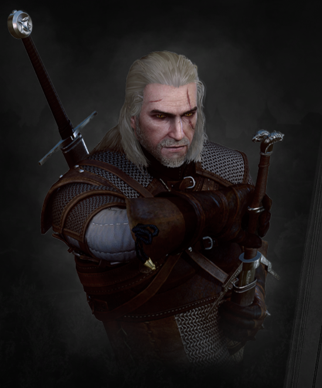
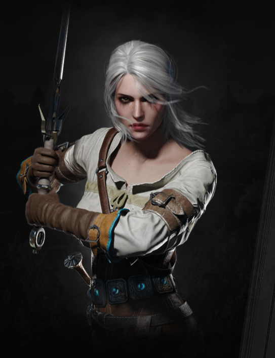
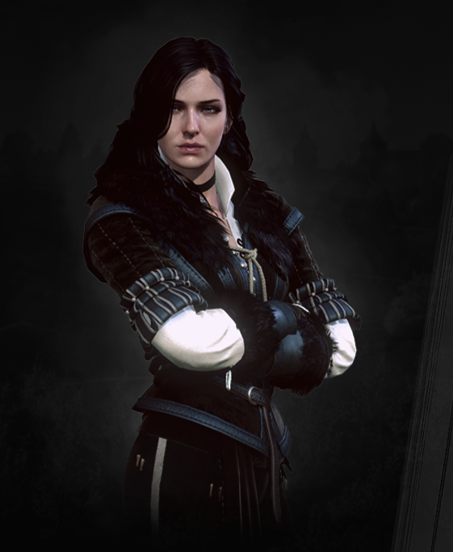
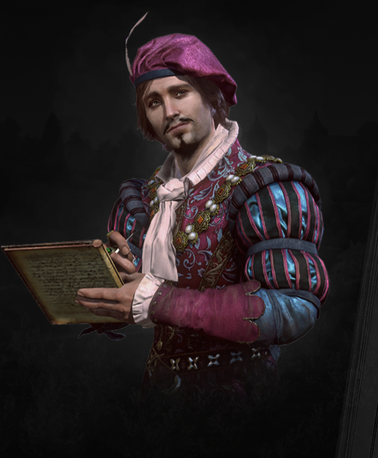
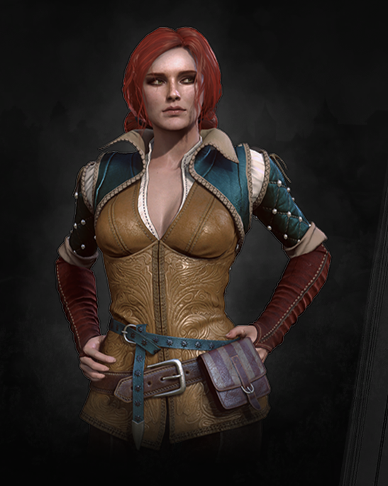

PL

Geralt z Rivii to główny bohater serii gier Wiedźmin.
Jest to wiedźmin, czyli zawodowy łowca potworów, który jest niezwykle utalentowany i doświadczony.
Jego ciało zostało zmodyfikowane przez magiczną mutację, co pozwala mu walczyć z potworami na równi.
Geralt jest człowiekiem o twardym charakterze, ale jednocześnie posiada głębokie emocje i lojalność wobec swoich przyjaciół.
Jego niezłomne przekonanie i obowiązek wypełniania zleceń powodują, że jest często zmuszony do podejmowania trudnych moralnie decyzji.
Mimo że jest często samotny, Geralt posiada silne więzi z innymi postaciami, zwłaszcza z Yennefer i Triss.
W grach Wiedźmin, gracze kierują Geraltem i podejmują decyzje, które wpłyną na jego losy i losy świata gry.

Cirilla Fiona Elen Riannon, często określana jako Ciri,
jest jedną z głównych postaci w świecie gry Wiedźmin. Jest ona wiedźminem w potencji i dziedziczką krwi wiedźminów,
co czyni ją jednym z najbardziej niezwykłych i potężnych stworzeń w świecie gry.
Ciri jest znana z bycia niezwykle zdeterminowaną i odważną, a także z niezwykłych zdolności bojowych i magicznych.
W grach Wiedźmin, Ciri jest często uważana za kluczową postać w fabule, a jej losy i przygody są ważnym elementem rozgrywki.
W grach Wiedźmin, Ciri jest często uważana za protegowanego Geralta i jedno z głównych ogniw fabularnych.

Yennefer z Vengerbergu to jedna z głównych postaci w świecie gry Wiedźmin.
Jest ona czarodziejką o wysokim pochodzeniu i wpływach, a także członkinią królewskiej akademii czarodziejów.
Yennefer jest postacią silną i inteligentną, która nie boi się podejmować ryzyka i dąży do swoich celów za wszelką cenę.
Jest ona także znana z pięknego wyglądu i seksualnego magnetyzmu, co często stanowi ważny element jej wizerunku i tożsamości. W grach Wiedźmin,
Yennefer jest często bliską sprzymierzeńcem i ukochaną Geralta z Rivii, a jej rola i wkład w fabułę gry zmieniają się w zależności od gry.

Jaskier, często nazywany po prostu Jaskrem, jest jednym z głównych bohaterów niezależnych w świecie gry Wiedźmin.
Jest on bardem i towarzyszem Geralta z Rivii, który często opowiada historie o swoich przygodach i dokonaniach.
Jaskier jest postacią pełną życia i optymizmu, który jest zawsze gotów uśmiechnąć się i zaśpiewać piosenkę,
nawet w najtrudniejszych sytuacjach. Jest on także znany z bycia zmiennym i niezbyt odpowiedzialnym,
co czasami prowadzi do konfliktów z Geraltem i innymi postaciami. W grach Wiedźmin,
Jaskier pełni często rolę narratora i źródła humoru, a także dodaje dodatkowego wymiaru i głębi do fabuły gry.

Triss Merigold to jedna z głównych postaci w świecie gry Wiedźmin.
Jest ona czarodziejką, a także członkinią królewskiej akademii czarodziejów.
Triss jest postacią życzliwą i opiekuńczą, która jest zawsze gotowa pomóc swoim przyjaciołom.
Jest ona także uważana za jedną z najpiękniejszych kobiet w świecie gry,
co często stanowi ważny element jej wizerunku i tożsamości.
W grach Wiedźmin, Triss jest często bliską sprzymierzeńcem Geralta z Rivii i innych wiedźminów,
a jej rola i wkład w fabułę gry zmieniają się w zależności od gry.